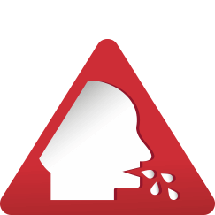

Prosta droga
do swobodnego
oddechu
do swobodnego
oddechu
działa przeciwzapalnie1
oczyszcza zatoki i oskrzela
zmniejsza produkcję
wydzieliny2
zwalcza wirusy i bakterie
Zapalenie Zatok? Przeziębienie*?
Mokry kaszel?
Mokry kaszel?
To znak, by wziąć
Soledum® forte
Soledum® forte

trudności
w oddychaniu
w oddychaniu
gęsta wydzielina
zatkany nos
zatokowy
ból głowy
ból głowy

mokry kaszel
*dotyczy łagodzenia objawów w drogach oddechowych
Jak działa Soledum® forte
Kapsułka zawierająca 1,8-cyneol po połknięciu przedostaje się przez
żołądek do jelita cienkiego. Taki sposób działania sprawia,
że substancja czynna omija żołądek i jest uwalniana dopiero
w jelitach.
Następnie przedostaje się do krwiobiegu i przenoszona jest do zmienionej
zapalnie tkanki zatok i oskrzeli gdzie zaczyna działać3.
Znacząco łagodzi objawy
zapalenia zatok i oskrzeli
Zmniejsza napady kaszlu
Ułatwia odkrztuszanie
i łagodzi duszność
Działanie potwierdzone
badaniami klinicznymi
badaniami klinicznymi
Zielone światło
dla 1,8-cyneolu
dla 1,8-cyneolu
Czy Soledum® forte ma roślinny
skład?
Naturalnie, że tak! 1,8-cyneol to substancja
pozyskiwana z olejku eukaliptusowego.
Mała
kapsułka
kapsułka
łatwa do połknięcia!
Dawkowanie
Dorośli i młodzież w wieku powyżej 12 lat:
stosować 1 kapsułkę 3 razy na dobę
stosować 1 kapsułkę 3 razy na dobę
W kontynuacji terapii lub długotrwałym leczeniu:
1 kapsułka 2 razy na dobę jest zazwyczaj wystarczająca
1 kapsułka 2 razy na dobę jest zazwyczaj wystarczająca
Około 30 minut przed posiłkiem, należy popijać szklanką chłodnej
wody.
Osoby o wrażliwym żołądku powinny przyjmować lek Soledum®
forte
w trakcie posiłku.
Korzystny profil bezpieczeństwa
- Soledum® forte można zażywać z niesteroidowymi lekami przeciwzapalnymi i przeciwbólowymi*.
- Soledum® forte nie wpływa na skuteczność innych leków oraz na czas ich działania.
- Nie ma przeciwwskazań do stosowania Soledum® forte wśród pacjentów z czynną chorobą wrzodową żołądka lub dwunastnicy, z niewydolnością wątroby, nerek.
- Nie zawiera cukru.
*brak przeciwwskazań do stosowania oraz specjalnych ostrzeżeń
i środków ostrożności dotyczących równoczesnego stosowania
1,8-cyneolu z lekami z grupy NLPZ wg Charakterystyki Produktu Leczniczego Soledum® forte. Brak interakcji dla eukaliptusa z: ibuprofenem,
paracetamolem, ketoprofenem, naproksenem na podstawie:
https://reference.medscape.com/drug-interactionchecker
(stan na 2023.08.09) oraz na podstawie https://go.drugbank.com/drugs/DB03852 (stan na 2023.08.09),
a także referencji nr 3
1 w drogach oddechowych
2 Sudhoff H i wsp. 1,8-Cineol reduces mucus-production in a novel human ex vivo model of late rhinosinusitis. PLoS One 2015; 10: e0133040.
3 Charakterystyka Produktu Leczniczego - Soledum® forte, 200 mg, kapsułki dojelitowe, miękkie.
2 Sudhoff H i wsp. 1,8-Cineol reduces mucus-production in a novel human ex vivo model of late rhinosinusitis. PLoS One 2015; 10: e0133040.
3 Charakterystyka Produktu Leczniczego - Soledum® forte, 200 mg, kapsułki dojelitowe, miękkie.
Soledum® forte, kapsułki
dojelitowe,
miękkie. Jedna kapsułka dojelitowa, miękka zawiera 200 mg 1,8-cyneolu (Cineolum).
Wskazania do stosowania: Jako środek wykrztuśny w
produktywnym
kaszlu. Leczenie wspomagające ostrego, nieropnego zapalenia zatok. Leczenie wspomagające w zapalnych
chorobach dróg oddechowych. Podmiot odpowiedzialny: M.C.M.
Klosterfrau Healthcare sp. z o.o.
To jest lek. Dla bezpieczeństwa stosuj go zgodnie z ulotką dołączoną do opakowania.
Nie przekraczaj maksymalnej dawki leku. W przypadku wątpliwości skonsultuj się z lekarzem lub
farmaceutą.